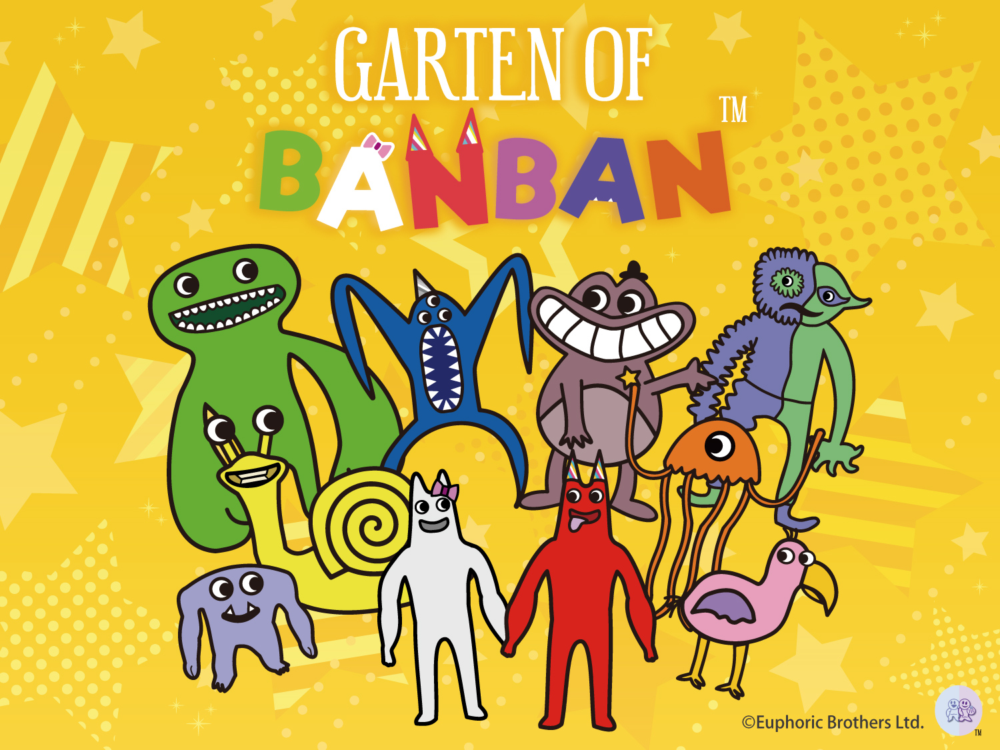
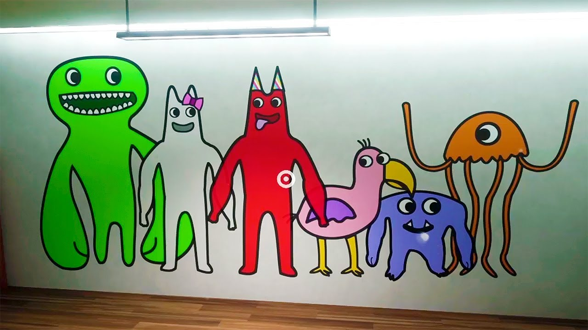
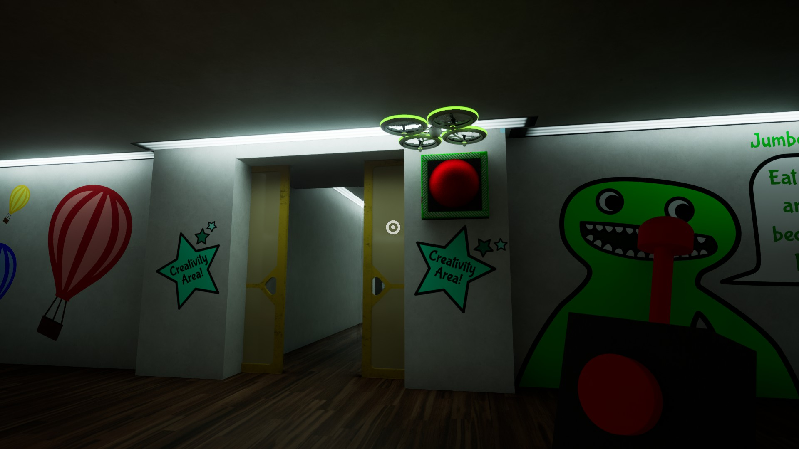

Garten of Banbanとは？
世界中で大人気のゲーム『Garten of Banban』についてまとめました！

【概要】
- アメリカのインディーゲーム制作チーム『Euphoric Brothers』によって2023年から開発・販売されている、一人称視点の3Dホラーゲームシリーズ
- 2025年5月現在では、チャプター0～4、6～7がリリースされている
- 『Five Nights at Freddy's』や『Poppy Playtime』と並ぶ、マスコットホラーゲームの代表格として、世界中で人気を博している
- 販売プラットフォームはSteamとROBLOX。2024年からは、NintendoSwitchやPlayStationなどのコンソールでもダウンロード可能

【ストーリー】
カナダにある『バンバン幼稚園（Banban's Kindergarten）』は、子供たちの笑顔が溢れる、夢のように楽しい場所だった。
しかしある日、幼稚園にいた園児全員が、突如として行方不明になってしまう事件が発生した。
あなたは、消えてしまった我が子を探すため、たった1人で幼稚園に潜入することを決意する。
そこには、かつての明るく賑やかな幼稚園の姿はなく、地下に広がる謎の巨大研究施設と、人間を襲う恐ろしい"マスコット"の存在が待ち受けていた。
子供たちはどこへ消えたのか？ マスコットの正体と、バンバン幼稚園の真相とは？
果たしてあなたは、無事に我が子を見つけ、この恐怖の幼稚園から生きて脱出することができるのか・・・？

【ここが面白い！魅力ポイント】
- ポップでキュートなマスコットたちと、ダークでホラーな世界観のギャップが最高！
- ストーリーの裏に隠された、マスコットや幼稚園の裏設定が奥深い！
- 謎解きあり、アクションあり、チェイスあり、ホラーゲームの良さが全て詰まっている！